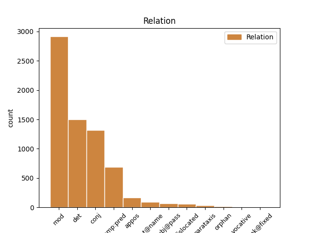
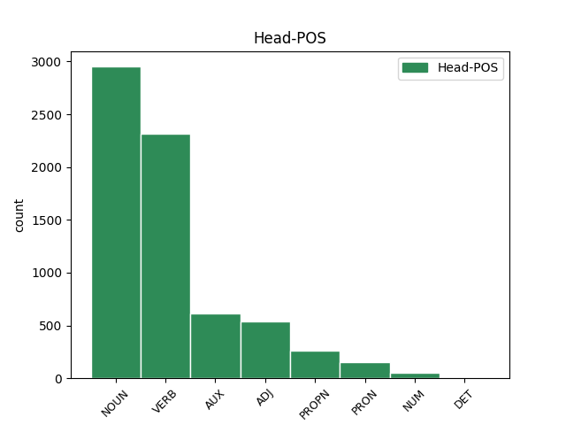
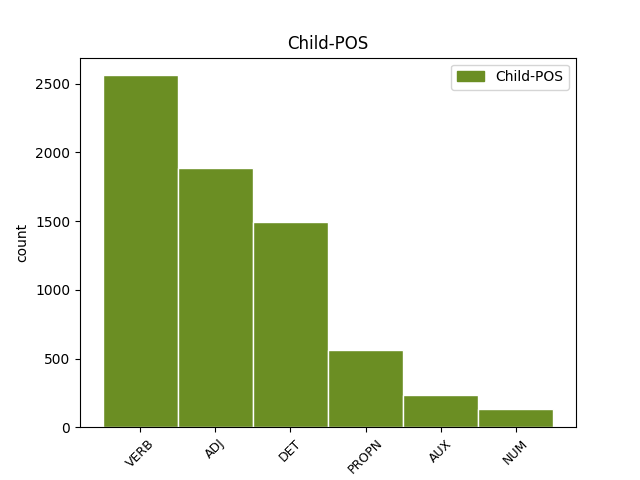

Distribution of features within this leaf



Agreement Rules sorted by frequency.
- When the dependent token is the determiner(det) of the head token, and the dependent token is DET.
1 Iþ _ _ _ _ 0 _ _ _
2 þu _ _ _ _ 0 _ _ _
3 rodei _ _ _ _ 0 _ _ _
4 þatei _ _ _ _ 0 _ _ _
5 gadof _ _ _ _ 0 _ _ _
6 ist _ _ _ _ 0 _ _ _
7 þizai sa DET Pd Case=Dat|Gender=Fem|Number=Sing 9 det _ ref=TIT_2.1
8 hailon _ _ _ _ 0 _ _ _
9 laiseinai laiseins NOUN Nb Case=Dat|Gender=Fem|Number=Sing 0 _ _ _
1 Iþ _ _ _ _ 0 _ _ _
2 þu _ _ _ _ 0 _ _ _
3 rodei _ _ _ _ 0 _ _ _
4 þatei _ _ _ _ 0 _ _ _
5 gadof _ _ _ _ 0 _ _ _
6 ist _ _ _ _ 0 _ _ _
7 þizai _ _ _ _ 0 _ _ _
8 hailon hails ADJ A- Case=Dat|Degree=Pos|Gender=Fem|Number=Sing|Strength=Weak 9 mod _ ref=TIT_2.1
9 laiseinai laiseins NOUN Nb Case=Dat|Gender=Fem|Number=Sing 0 _ _ _
1 in _ _ _ _ 0 _ _ _
2 þizozei _ _ _ _ 0 _ _ _
3 fairinos _ _ _ _ 0 _ _ _
4 gasak _ _ _ _ 0 _ _ _
5 ins _ _ _ _ 0 _ _ _
6 ƕassaba _ _ _ _ 0 _ _ _
7 ei _ _ _ _ 0 _ _ _
8 hailai _ _ _ _ 0 _ _ _
9 sijaina _ _ _ _ 0 _ _ _
10 in _ _ _ _ 0 _ _ _
11 galaubeinai _ _ _ _ 0 _ _ _
12 ni _ _ _ _ 0 _ _ _
13 atsaiƕandans _ _ _ _ 0 _ _ _
14 judaiwiskaize _ _ _ _ 0 _ _ _
15 spilli _ _ _ _ 0 _ _ _
16 jah _ _ _ _ 0 _ _ _
17 anabusne _ _ _ _ 0 _ _ _
18 manne manna NOUN Nb Case=Gen|Gender=Masc|Number=Plur 0 _ _ _
19 afwandjandane af-wandjan VERB V- Case=Gen|Gender=Masc,Neut|Number=Plur|Strength=Weak|Tense=Pres|VerbForm=Part|Voice=Act 18 mod _ ref=TIT_1.14
20 sis _ _ _ _ 0 _ _ _
21 sunja _ _ _ _ 0 _ _ _
1 guþ _ _ _ _ 0 _ _ _
2 andhaitand _ _ _ _ 0 _ _ _
3 kunnan _ _ _ _ 0 _ _ _
4 iþ _ _ _ _ 0 _ _ _
5 waurstwam _ _ _ _ 0 _ _ _
6 inwidand _ _ _ _ 0 _ _ _
7 andasetjai _ _ _ _ 0 _ _ _
8 wisandans _ _ _ _ 0 _ _ _
9 jah _ _ _ _ 0 _ _ _
10 ungalaubjandans ungalaubjands VERB V- Case=Nom|Gender=Masc|Number=Plur|Strength=Weak|Tense=Pres|VerbForm=Part|Voice=Act 0 _ _ _
11 jah _ _ _ _ 0 _ _ _
12 du _ _ _ _ 0 _ _ _
13 allamma _ _ _ _ 0 _ _ _
14 waurstwe _ _ _ _ 0 _ _ _
15 godaize _ _ _ _ 0 _ _ _
16 uskusanai us-kiusan VERB V- Aspect=Perf|Case=Nom|Gender=Masc|Number=Plur|Strength=Strong|Tense=Past|VerbForm=Part|Voice=Pass 10 conj _ ref=TIT_1.16
1 aþþan _ _ _ _ 0 _ _ _
2 all _ _ _ _ 0 _ _ _
3 hrain _ _ _ _ 0 _ _ _
4 hrainjaim _ _ _ _ 0 _ _ _
5 iþ _ _ _ _ 0 _ _ _
6 bisaulidaim _ _ _ _ 0 _ _ _
7 jah _ _ _ _ 0 _ _ _
8 ungalaubjandam _ _ _ _ 0 _ _ _
9 ni _ _ _ _ 0 _ _ _
10 waiht _ _ _ _ 0 _ _ _
11 hrain _ _ _ _ 0 _ _ _
12 ak _ _ _ _ 0 _ _ _
13 bisaulida bi-sauljan VERB V- Aspect=Perf|Case=Nom|Gender=Neut|Number=Plur|Strength=Strong|Tense=Past|VerbForm=Part|Voice=Pass 14 comp:pred _ ref=TIT_1.15
14 sind wisan AUX V- Mood=Ind|Number=Plur|Person=3|Tense=Pres|VerbForm=Fin|Voice=Act 0 _ _ _
15 ize _ _ _ _ 0 _ _ _
16 jah _ _ _ _ 0 _ _ _
17 aha _ _ _ _ 0 _ _ _
18 jah _ _ _ _ 0 _ _ _
19 miþwissei _ _ _ _ 0 _ _ _
1 Iþ _ _ _ _ 0 _ _ _
2 þu _ _ _ _ 0 _ _ _
3 rodei _ _ _ _ 0 _ _ _
4 þatei _ _ _ _ 0 _ _ _
5 gadof ga-dofs* ADJ A- Case=Nom|Degree=Pos|Gender=Neut|Number=Sing|Strength=Strong 6 comp:pred _ ref=TIT_2.1
6 ist wisan AUX V- Mood=Ind|Number=Sing|Person=3|Tense=Pres|VerbForm=Fin|Voice=Act 0 _ _ _
7 þizai _ _ _ _ 0 _ _ _
8 hailon _ _ _ _ 0 _ _ _
9 laiseinai _ _ _ _ 0 _ _ _
1 Pawlus _ _ _ _ 0 _ _ _
2 skalks _ _ _ _ 0 _ _ _
3 gudis _ _ _ _ 0 _ _ _
4 iþ _ _ _ _ 0 _ _ _
5 apaustaulus apaustaulus NOUN Nb Case=Nom|Gender=Masc|Number=Sing 0 _ _ _
6 Iesuis Iesus PROPN Ne Case=Gen|Gender=Masc|Number=Sing 5 mod _ ref=TIT_1.1
7 Xristaus _ _ _ _ 0 _ _ _
8 bi _ _ _ _ 0 _ _ _
9 galaubeinai _ _ _ _ 0 _ _ _
10 gawalidaize _ _ _ _ 0 _ _ _
11 gudis _ _ _ _ 0 _ _ _
12 jah _ _ _ _ 0 _ _ _
13 ufkunþja _ _ _ _ 0 _ _ _
14 sunjos _ _ _ _ 0 _ _ _
15 sei _ _ _ _ 0 _ _ _
16 bi _ _ _ _ 0 _ _ _
17 gagudein _ _ _ _ 0 _ _ _
18 ist _ _ _ _ 0 _ _ _
19 du _ _ _ _ 0 _ _ _
20 wenai _ _ _ _ 0 _ _ _
21 libainais _ _ _ _ 0 _ _ _
22 aiweinons _ _ _ _ 0 _ _ _
23 þoei _ _ _ _ 0 _ _ _
24 gahaihait _ _ _ _ 0 _ _ _
25 unliugands _ _ _ _ 0 _ _ _
26 guþ _ _ _ _ 0 _ _ _
27 faur _ _ _ _ 0 _ _ _
28 mela _ _ _ _ 0 _ _ _
29 aiweina _ _ _ _ 0 _ _ _
30 iþ _ _ _ _ 0 _ _ _
31 ataugida _ _ _ _ 0 _ _ _
32 mela _ _ _ _ 0 _ _ _
33 swesamma _ _ _ _ 0 _ _ _
34 waurd _ _ _ _ 0 _ _ _
35 sein _ _ _ _ 0 _ _ _
36 in _ _ _ _ 0 _ _ _
37 mereinai _ _ _ _ 0 _ _ _
38 sei _ _ _ _ 0 _ _ _
39 gatrauaida _ _ _ _ 0 _ _ _
40 ist _ _ _ _ 0 _ _ _
41 mis _ _ _ _ 0 _ _ _
42 bi _ _ _ _ 0 _ _ _
43 anabusnai _ _ _ _ 0 _ _ _
44 nasjandis _ _ _ _ 0 _ _ _
45 unsaris _ _ _ _ 0 _ _ _
46 gudis _ _ _ _ 0 _ _ _
47 Teitau _ _ _ _ 0 _ _ _
48 walisin _ _ _ _ 0 _ _ _
49 barna _ _ _ _ 0 _ _ _
50 bi _ _ _ _ 0 _ _ _
51 gamainjai _ _ _ _ 0 _ _ _
52 galaubeinai _ _ _ _ 0 _ _ _
1 aþþan _ _ _ _ 0 _ _ _
2 all _ _ _ _ 0 _ _ _
3 hrain hrains ADJ A- Case=Nom|Degree=Pos|Gender=Neut|Number=Sing|Strength=Strong 0 _ _ _
4 hrainjaim _ _ _ _ 0 _ _ _
5 iþ _ _ _ _ 0 _ _ _
6 bisaulidaim _ _ _ _ 0 _ _ _
7 jah _ _ _ _ 0 _ _ _
8 ungalaubjandam _ _ _ _ 0 _ _ _
9 ni _ _ _ _ 0 _ _ _
10 waiht _ _ _ _ 0 _ _ _
11 hrain hrains ADJ A- Case=Nom|Degree=Pos|Gender=Neut|Number=Sing|Strength=Strong 3 conj _ ref=TIT_1.15
12 ak _ _ _ _ 0 _ _ _
13 bisaulida _ _ _ _ 0 _ _ _
14 sind _ _ _ _ 0 _ _ _
15 ize _ _ _ _ 0 _ _ _
16 jah _ _ _ _ 0 _ _ _
17 aha _ _ _ _ 0 _ _ _
18 jah _ _ _ _ 0 _ _ _
19 miþwissei _ _ _ _ 0 _ _ _
1 ansts _ _ _ _ 0 _ _ _
2 jah _ _ _ _ 0 _ _ _
3 gawairþi _ _ _ _ 0 _ _ _
4 fram _ _ _ _ 0 _ _ _
5 guda _ _ _ _ 0 _ _ _
6 attin _ _ _ _ 0 _ _ _
7 jah _ _ _ _ 0 _ _ _
8 Xristau Xristus PROPN Ne Case=Dat|Gender=Masc|Number=Sing 0 _ _ _
9 Iesu Iesus PROPN Ne Case=Dat|Gender=Masc|Number=Sing 8 flat@name _ ref=TIT_1.4
10 nasjand _ _ _ _ 0 _ _ _
11 unsaramma _ _ _ _ 0 _ _ _
1 in _ _ _ _ 0 _ _ _
2 þizozei _ _ _ _ 0 _ _ _
3 waihtais _ _ _ _ 0 _ _ _
4 bilaiþ _ _ _ _ 0 _ _ _
5 þus _ _ _ _ 0 _ _ _
6 in _ _ _ _ 0 _ _ _
7 Kretai _ _ _ _ 0 _ _ _
8 in _ _ _ _ 0 _ _ _
9 þize _ _ _ _ 0 _ _ _
10 ei _ _ _ _ 0 _ _ _
11 wanata _ _ _ _ 0 _ _ _
12 atgaraihtjais _ _ _ _ 0 _ _ _
13 jah _ _ _ _ 0 _ _ _
14 gasatjais _ _ _ _ 0 _ _ _
15 and _ _ _ _ 0 _ _ _
16 baurgs _ _ _ _ 0 _ _ _
17 praizbwtairein _ _ _ _ 0 _ _ _
18 swaswe _ _ _ _ 0 _ _ _
19 ik _ _ _ _ 0 _ _ _
20 þus _ _ _ _ 0 _ _ _
21 garaidida _ _ _ _ 0 _ _ _
22 jabai _ _ _ _ 0 _ _ _
23 ƕas _ _ _ _ 0 _ _ _
24 ist _ _ _ _ 0 _ _ _
25 ungafairinonds _ _ _ _ 0 _ _ _
26 ainaizos ains NUM Ma Case=Gen|Gender=Fem|Number=Sing 27 mod _ ref=TIT_1.6
27 qenais qens NOUN Nb Case=Gen|Gender=Fem|Number=Sing 0 _ _ _
28 aba _ _ _ _ 0 _ _ _
29 barna _ _ _ _ 0 _ _ _
30 habands _ _ _ _ 0 _ _ _
31 galaubeina _ _ _ _ 0 _ _ _
32 ni _ _ _ _ 0 _ _ _
33 in _ _ _ _ 0 _ _ _
34 usqissai _ _ _ _ 0 _ _ _
35 usstiureins _ _ _ _ 0 _ _ _
36 aiþþau _ _ _ _ 0 _ _ _
37 ungaƕairba _ _ _ _ 0 _ _ _
1 guþ _ _ _ _ 0 _ _ _
2 andhaitand _ _ _ _ 0 _ _ _
3 kunnan _ _ _ _ 0 _ _ _
4 iþ _ _ _ _ 0 _ _ _
5 waurstwam _ _ _ _ 0 _ _ _
6 inwidand in-widan VERB V- Mood=Ind|Number=Plur|Person=3|Tense=Pres|VerbForm=Fin|Voice=Act 0 _ _ _
7 andasetjai _ _ _ _ 0 _ _ _
8 wisandans wisan AUX V- Case=Nom|Gender=Masc|Number=Plur|Strength=Weak|Tense=Pres|VerbForm=Part|Voice=Act 6 mod _ LId=1|ref=TIT_1.16
9 jah _ _ _ _ 0 _ _ _
10 ungalaubjandans _ _ _ _ 0 _ _ _
11 jah _ _ _ _ 0 _ _ _
12 du _ _ _ _ 0 _ _ _
13 allamma _ _ _ _ 0 _ _ _
14 waurstwe _ _ _ _ 0 _ _ _
15 godaize _ _ _ _ 0 _ _ _
16 uskusanai _ _ _ _ 0 _ _ _
1 Weitwodja _ _ _ _ 0 _ _ _
2 in _ _ _ _ 0 _ _ _
3 andwairþja _ _ _ _ 0 _ _ _
4 gudis _ _ _ _ 0 _ _ _
5 jah _ _ _ _ 0 _ _ _
6 fraujins frauja NOUN Nb Case=Gen|Gender=Masc|Number=Sing 0 _ _ _
7 Xristaus Xristus PROPN Ne Case=Gen|Gender=Masc|Number=Sing 6 appos _ ref=2TIM_4.1
8 Iesuis _ _ _ _ 0 _ _ _
9 saei _ _ _ _ 0 _ _ _
10 skal _ _ _ _ 0 _ _ _
11 stojan _ _ _ _ 0 _ _ _
12 qiwans _ _ _ _ 0 _ _ _
13 jah _ _ _ _ 0 _ _ _
14 dauþans _ _ _ _ 0 _ _ _
15 bi _ _ _ _ 0 _ _ _
16 qum _ _ _ _ 0 _ _ _
17 is _ _ _ _ 0 _ _ _
18 jah _ _ _ _ 0 _ _ _
19 þiudinassu _ _ _ _ 0 _ _ _
20 is _ _ _ _ 0 _ _ _
1 ansts _ _ _ _ 0 _ _ _
2 jah _ _ _ _ 0 _ _ _
3 gawairþi _ _ _ _ 0 _ _ _
4 fram _ _ _ _ 0 _ _ _
5 guda guþ NOUN Nb Case=Dat|Gender=Masc|Number=Sing 0 _ _ _
6 attin _ _ _ _ 0 _ _ _
7 jah _ _ _ _ 0 _ _ _
8 Xristau Xristus PROPN Ne Case=Dat|Gender=Masc|Number=Sing 5 conj _ ref=TIT_1.4
9 Iesu _ _ _ _ 0 _ _ _
10 nasjand _ _ _ _ 0 _ _ _
11 unsaramma _ _ _ _ 0 _ _ _
1 samaleiko _ _ _ _ 0 _ _ _
2 þan _ _ _ _ 0 _ _ _
3 jah _ _ _ _ 0 _ _ _
4 waurstwa _ _ _ _ 0 _ _ _
5 goda _ _ _ _ 0 _ _ _
6 swikunþa swikunþs ADJ A- Case=Nom|Degree=Pos|Gender=Neut|Number=Plur|Strength=Strong 0 _ _ _
7 sind _ _ _ _ 0 _ _ _
8 jah _ _ _ _ 0 _ _ _
9 þoei _ _ _ _ 0 _ _ _
10 aljaleikos _ _ _ _ 0 _ _ _
11 sik _ _ _ _ 0 _ _ _
12 habandona _ _ _ _ 0 _ _ _
13 filhan _ _ _ _ 0 _ _ _
14 ni _ _ _ _ 0 _ _ _
15 mahta _ _ _ _ 0 _ _ _
16 sind wisan AUX V- Mood=Ind|Number=Plur|Person=3|Tense=Pres|VerbForm=Fin|Voice=Act 6 conj _ LId=1|ref=1TIM_5.25
1 jah _ _ _ _ 0 _ _ _
2 insandidedum _ _ _ _ 0 _ _ _
3 Teimauþaiu _ _ _ _ 0 _ _ _
4 broþar _ _ _ _ 0 _ _ _
5 unsarana _ _ _ _ 0 _ _ _
6 jah _ _ _ _ 0 _ _ _
7 andbaht _ _ _ _ 0 _ _ _
8 gudis _ _ _ _ 0 _ _ _
9 in _ _ _ _ 0 _ _ _
10 aiwaggeljon _ _ _ _ 0 _ _ _
11 Xristaus _ _ _ _ 0 _ _ _
12 ei _ _ _ _ 0 _ _ _
13 izwis _ _ _ _ 0 _ _ _
14 gatulgjai _ _ _ _ 0 _ _ _
15 jah _ _ _ _ 0 _ _ _
16 bidjai _ _ _ _ 0 _ _ _
17 bi _ _ _ _ 0 _ _ _
18 galaubein _ _ _ _ 0 _ _ _
19 izwara _ _ _ _ 0 _ _ _
20 ei _ _ _ _ 0 _ _ _
21 ni _ _ _ _ 0 _ _ _
22 ainshun ainshun ADJ Px Case=Nom|Gender=Masc|Number=Sing 23 subj@pass _ ref=1THESS_3.3
23 afagjaidau af-agjan VERB V- Mood=Opt|Number=Sing|Person=3|Tense=Pres|VerbForm=Fin|Voice=Pass 0 _ _ _
24 in _ _ _ _ 0 _ _ _
25 þaim _ _ _ _ 0 _ _ _
26 aggwiþom _ _ _ _ 0 _ _ _
1 Pawlus _ _ _ _ 0 _ _ _
2 apaustaulus _ _ _ _ 0 _ _ _
3 Iesuis _ _ _ _ 0 _ _ _
4 Xristaus _ _ _ _ 0 _ _ _
5 þairh _ _ _ _ 0 _ _ _
6 wiljan _ _ _ _ 0 _ _ _
7 gudis _ _ _ _ 0 _ _ _
8 bi _ _ _ _ 0 _ _ _
9 gahaitam _ _ _ _ 0 _ _ _
10 libainais libains NOUN Nb Case=Gen|Gender=Fem|Number=Sing 0 _ _ _
11 sei _ _ _ _ 0 _ _ _
12 ist wisan AUX V- Mood=Ind|Number=Sing|Person=3|Tense=Pres|VerbForm=Fin|Voice=Act 10 appos _ LId=1|ref=2TIM_1.1
13 in _ _ _ _ 0 _ _ _
14 Xristau _ _ _ _ 0 _ _ _
15 Iesu _ _ _ _ 0 _ _ _
16 Teimauþaiau _ _ _ _ 0 _ _ _
17 liubin _ _ _ _ 0 _ _ _
18 barna _ _ _ _ 0 _ _ _
1 goleiþ _ _ _ _ 0 _ _ _
2 izwis _ _ _ _ 0 _ _ _
3 Aristarkus _ _ _ _ 0 _ _ _
4 sa _ _ _ _ 0 _ _ _
5 miþfrahunþana _ _ _ _ 0 _ _ _
6 mis _ _ _ _ 0 _ _ _
7 jah _ _ _ _ 0 _ _ _
8 Markus _ _ _ _ 0 _ _ _
9 gadiliggs _ _ _ _ 0 _ _ _
10 Barnabins _ _ _ _ 0 _ _ _
11 bi _ _ _ _ 0 _ _ _
12 þanei _ _ _ _ 0 _ _ _
13 nemuþ _ _ _ _ 0 _ _ _
14 anabusnins _ _ _ _ 0 _ _ _
15 ei _ _ _ _ 0 _ _ _
16 jabai _ _ _ _ 0 _ _ _
17 qimai _ _ _ _ 0 _ _ _
18 at _ _ _ _ 0 _ _ _
19 izwis _ _ _ _ 0 _ _ _
20 andnimaiþ _ _ _ _ 0 _ _ _
21 ina _ _ _ _ 0 _ _ _
22 jah _ _ _ _ 0 _ _ _
23 Iesus _ _ _ _ 0 _ _ _
24 saei _ _ _ _ 0 _ _ _
25 haitada haitan VERB V- Mood=Ind|Number=Sing|Person=3|Tense=Pres|VerbForm=Fin|Voice=Pass 0 _ _ _
26 Justus Justus PROPN Ne Case=Nom|Gender=Masc|Number=Sing 25 comp:pred _ ref=COL_4.11
27 þaiei _ _ _ _ 0 _ _ _
28 sind _ _ _ _ 0 _ _ _
29 us _ _ _ _ 0 _ _ _
30 bimaita _ _ _ _ 0 _ _ _
1 þaþro _ _ _ _ 0 _ _ _
2 þan _ _ _ _ 0 _ _ _
3 weis weis PRON Pp Case=Nom|Gender=Masc|Number=Plur|Person=1|PronType=Prs 0 _ _ _
4 þai _ _ _ _ 0 _ _ _
5 libandans _ _ _ _ 0 _ _ _
6 þai _ _ _ _ 0 _ _ _
7 aflifnandans af-lifnan VERB V- Case=Nom|Gender=Masc|Number=Plur|Strength=Weak|Tense=Pres|VerbForm=Part|Voice=Act 3 appos _ ref=1THESS_4.17
8 suns _ _ _ _ 0 _ _ _
9 miþ _ _ _ _ 0 _ _ _
10 imma _ _ _ _ 0 _ _ _
11 frawilwanda _ _ _ _ 0 _ _ _
12 in _ _ _ _ 0 _ _ _
13 milhmam _ _ _ _ 0 _ _ _
14 du _ _ _ _ 0 _ _ _
15 gamotjan _ _ _ _ 0 _ _ _
16 fraujin _ _ _ _ 0 _ _ _
17 in _ _ _ _ 0 _ _ _
18 luftau _ _ _ _ 0 _ _ _
19 jah _ _ _ _ 0 _ _ _
20 swa _ _ _ _ 0 _ _ _
21 framwigis _ _ _ _ 0 _ _ _
22 miþ _ _ _ _ 0 _ _ _
23 fraujin _ _ _ _ 0 _ _ _
24 wairþam _ _ _ _ 0 _ _ _
1 aþþan _ _ _ _ 0 _ _ _
2 tulgus _ _ _ _ 0 _ _ _
3 grunduwaddjus _ _ _ _ 0 _ _ _
4 gudis _ _ _ _ 0 _ _ _
5 standiþ standan VERB V- Mood=Ind|Number=Sing|Person=3|Tense=Pres|VerbForm=Fin|Voice=Act 0 _ _ _
6 habands _ _ _ _ 0 _ _ _
7 sigljo _ _ _ _ 0 _ _ _
8 þata _ _ _ _ 0 _ _ _
9 kunþa _ _ _ _ 0 _ _ _
10 frauja _ _ _ _ 0 _ _ _
11 þans _ _ _ _ 0 _ _ _
12 þaiei _ _ _ _ 0 _ _ _
13 sind _ _ _ _ 0 _ _ _
14 is _ _ _ _ 0 _ _ _
15 jah _ _ _ _ 0 _ _ _
16 afstandai af-standan VERB V- Mood=Opt|Number=Sing|Person=3|Tense=Pres|VerbForm=Fin|Voice=Act 5 parataxis _ ref=2TIM_2.19
17 af _ _ _ _ 0 _ _ _
18 unselein _ _ _ _ 0 _ _ _
19 ƕazuh _ _ _ _ 0 _ _ _
20 saei _ _ _ _ 0 _ _ _
21 namnjai _ _ _ _ 0 _ _ _
22 namo _ _ _ _ 0 _ _ _
23 fraujins _ _ _ _ 0 _ _ _
1 þannu _ _ _ _ 0 _ _ _
2 nu _ _ _ _ 0 _ _ _
3 broþrjus _ _ _ _ 0 _ _ _
4 anahaitam _ _ _ _ 0 _ _ _
5 bidai _ _ _ _ 0 _ _ _
6 izwis _ _ _ _ 0 _ _ _
7 jah _ _ _ _ 0 _ _ _
8 bidjam _ _ _ _ 0 _ _ _
9 in _ _ _ _ 0 _ _ _
10 fraujin _ _ _ _ 0 _ _ _
11 Iesua _ _ _ _ 0 _ _ _
12 ei _ _ _ _ 0 _ _ _
13 swaswe _ _ _ _ 0 _ _ _
14 andnemuþ and-niman VERB V- Mood=Ind|Number=Plur|Person=2|Tense=Past|VerbForm=Fin|Voice=Act 25 dislocated _ ref=1THESS_4.1
15 at _ _ _ _ 0 _ _ _
16 uns _ _ _ _ 0 _ _ _
17 ƕaiwa _ _ _ _ 0 _ _ _
18 skuluþ _ _ _ _ 0 _ _ _
19 gaggan _ _ _ _ 0 _ _ _
20 jah _ _ _ _ 0 _ _ _
21 galeikan _ _ _ _ 0 _ _ _
22 guda _ _ _ _ 0 _ _ _
23 swa _ _ _ _ 0 _ _ _
24 jah _ _ _ _ 0 _ _ _
25 gaggaiþ gaggan VERB V- Mood=Opt|Number=Plur|Person=2|Tense=Pres|VerbForm=Fin|Voice=Act 0 _ _ _
26 jah _ _ _ _ 0 _ _ _
27 gaaukaiþ _ _ _ _ 0 _ _ _
28 mais _ _ _ _ 0 _ _ _
1 aþþan _ _ _ _ 0 _ _ _
2 jabai _ _ _ _ 0 _ _ _
3 ƕas _ _ _ _ 0 _ _ _
4 swesaim swes ADJ A- Case=Dat|Degree=Pos|Gender=Masc|Number=Plur|Strength=Strong 0 _ _ _
5 þishun _ _ _ _ 0 _ _ _
6 ingardjam ingardja ADJ A- Case=Dat|Degree=Pos|Gender=Masc|Number=Plur|Strength=Weak 4 appos _ ref=1TIM_5.8
7 ni _ _ _ _ 0 _ _ _
8 gaþlaihiþ _ _ _ _ 0 _ _ _
9 galaubein _ _ _ _ 0 _ _ _
10 inwidiþ _ _ _ _ 0 _ _ _
11 jah _ _ _ _ 0 _ _ _
12 ist _ _ _ _ 0 _ _ _
13 ungalaubjandin _ _ _ _ 0 _ _ _
14 wairsiza _ _ _ _ 0 _ _ _
1 samaleiko _ _ _ _ 0 _ _ _
2 þan _ _ _ _ 0 _ _ _
3 jah _ _ _ _ 0 _ _ _
4 waurstwa _ _ _ _ 0 _ _ _
5 goda _ _ _ _ 0 _ _ _
6 swikunþa _ _ _ _ 0 _ _ _
7 sind _ _ _ _ 0 _ _ _
8 jah _ _ _ _ 0 _ _ _
9 þoei _ _ _ _ 0 _ _ _
10 aljaleikos _ _ _ _ 0 _ _ _
11 sik _ _ _ _ 0 _ _ _
12 habandona haban VERB V- Case=Nom|Gender=Neut|Number=Plur|Strength=Weak|Tense=Pres|VerbForm=Part|Voice=Act 16 subj@pass _ ref=1TIM_5.25
13 filhan _ _ _ _ 0 _ _ _
14 ni _ _ _ _ 0 _ _ _
15 mahta _ _ _ _ 0 _ _ _
16 sind wisan AUX V- Mood=Ind|Number=Plur|Person=3|Tense=Pres|VerbForm=Fin|Voice=Act 0 _ _ _
1 unte _ _ _ _ 0 _ _ _
2 wait _ _ _ _ 0 _ _ _
3 ei _ _ _ _ 0 _ _ _
4 þata _ _ _ _ 0 _ _ _
5 mis _ _ _ _ 0 _ _ _
6 gagaggiþ _ _ _ _ 0 _ _ _
7 du _ _ _ _ 0 _ _ _
8 ganistai _ _ _ _ 0 _ _ _
9 þairh _ _ _ _ 0 _ _ _
10 izwara _ _ _ _ 0 _ _ _
11 bida _ _ _ _ 0 _ _ _
12 jah _ _ _ _ 0 _ _ _
13 andstald _ _ _ _ 0 _ _ _
14 ahmins _ _ _ _ 0 _ _ _
15 Xristaus _ _ _ _ 0 _ _ _
16 Iesuis _ _ _ _ 0 _ _ _
17 bi _ _ _ _ 0 _ _ _
18 usbeisnai _ _ _ _ 0 _ _ _
19 jah _ _ _ _ 0 _ _ _
20 wenai _ _ _ _ 0 _ _ _
21 meinaim _ _ _ _ 0 _ _ _
22 unte _ _ _ _ 0 _ _ _
23 ni _ _ _ _ 0 _ _ _
24 in _ _ _ _ 0 _ _ _
25 waihtai _ _ _ _ 0 _ _ _
26 gaaiwiskoþs _ _ _ _ 0 _ _ _
27 wairþa _ _ _ _ 0 _ _ _
28 ak _ _ _ _ 0 _ _ _
29 in _ _ _ _ 0 _ _ _
30 allai _ _ _ _ 0 _ _ _
31 trauainai _ _ _ _ 0 _ _ _
32 swe _ _ _ _ 0 _ _ _
33 sinteino _ _ _ _ 0 _ _ _
34 jah _ _ _ _ 0 _ _ _
35 nu _ _ _ _ 0 _ _ _
36 mikiljada mikiljan VERB V- Mood=Ind|Number=Sing|Person=3|Tense=Pres|VerbForm=Fin|Voice=Pass 0 _ _ _
37 Xristus Xristus PROPN Ne Case=Nom|Gender=Masc|Number=Sing 36 subj@pass _ ref=PHIL_1.20
38 in _ _ _ _ 0 _ _ _
39 leika _ _ _ _ 0 _ _ _
40 meinamma _ _ _ _ 0 _ _ _
41 jaþþe _ _ _ _ 0 _ _ _
42 þairh _ _ _ _ 0 _ _ _
43 libain _ _ _ _ 0 _ _ _
44 jaþþe _ _ _ _ 0 _ _ _
45 þairh _ _ _ _ 0 _ _ _
46 dauþu _ _ _ _ 0 _ _ _
1 swa _ _ _ _ 0 _ _ _
2 managai manags ADJ A- Case=Nom|Degree=Pos|Gender=Masc|Number=Plur|Strength=Strong 10 dislocated _ ref=GAL_6.12
3 swe _ _ _ _ 0 _ _ _
4 wileina _ _ _ _ 0 _ _ _
5 samjan _ _ _ _ 0 _ _ _
6 sis _ _ _ _ 0 _ _ _
7 in _ _ _ _ 0 _ _ _
8 leika _ _ _ _ 0 _ _ _
9 þai _ _ _ _ 0 _ _ _
10 nauþjand nauþjan VERB V- Mood=Ind|Number=Plur|Person=3|Tense=Pres|VerbForm=Fin|Voice=Act 0 _ _ _
11 izwis _ _ _ _ 0 _ _ _
12 bimaitan _ _ _ _ 0 _ _ _
13 ei _ _ _ _ 0 _ _ _
14 ƕeh _ _ _ _ 0 _ _ _
15 wrakja _ _ _ _ 0 _ _ _
16 galgins _ _ _ _ 0 _ _ _
17 Xristaus _ _ _ _ 0 _ _ _
18 ni _ _ _ _ 0 _ _ _
19 winnaina _ _ _ _ 0 _ _ _
1 swe _ _ _ _ 0 _ _ _
2 leik _ _ _ _ 0 _ _ _
3 raihtis _ _ _ _ 0 _ _ _
4 ain ains NUM Ma Case=Nom|Gender=Neut|Number=Sing 5 comp:pred _ ref=1COR_12.12
5 ist wisan AUX V- Mood=Ind|Number=Sing|Person=3|Tense=Pres|VerbForm=Fin|Voice=Act 0 _ _ _
6 iþ _ _ _ _ 0 _ _ _
7 liþuns _ _ _ _ 0 _ _ _
8 habaiþ _ _ _ _ 0 _ _ _
9 managans _ _ _ _ 0 _ _ _
10 þai _ _ _ _ 0 _ _ _
11 þ _ _ _ _ 0 _ _ _
12 þan _ _ _ _ 0 _ _ _
13 liþjus _ _ _ _ 0 _ _ _
14 allai _ _ _ _ 0 _ _ _
15 us _ _ _ _ 0 _ _ _
16 leika _ _ _ _ 0 _ _ _
17 þamma _ _ _ _ 0 _ _ _
18 ainamma _ _ _ _ 0 _ _ _
19 managai _ _ _ _ 0 _ _ _
20 wisandans _ _ _ _ 0 _ _ _
21 ain _ _ _ _ 0 _ _ _
22 ist _ _ _ _ 0 _ _ _
23 leik _ _ _ _ 0 _ _ _
24 swa _ _ _ _ 0 _ _ _
25 jah _ _ _ _ 0 _ _ _
26 Xristus _ _ _ _ 0 _ _ _
1 aþþan _ _ _ _ 0 _ _ _
2 wituþ witan VERB V- Mood=Ind|Number=Plur|Person=2|Tense=Pres|VerbForm=Fin|Voice=Act 0 _ _ _
3 jah _ _ _ _ 0 _ _ _
4 jus _ _ _ _ 0 _ _ _
5 Filippisius Filippisius PROPN Ne Case=Voc|Gender=Masc|Number=Plur 2 vocative _ ref=PHIL_4.15
6 þatei _ _ _ _ 0 _ _ _
7 in _ _ _ _ 0 _ _ _
8 anastodeinai _ _ _ _ 0 _ _ _
9 aiwaggeljons _ _ _ _ 0 _ _ _
10 þan _ _ _ _ 0 _ _ _
11 usiddja _ _ _ _ 0 _ _ _
12 af _ _ _ _ 0 _ _ _
13 Makidonai _ _ _ _ 0 _ _ _
14 ni _ _ _ _ 0 _ _ _
15 ainohun _ _ _ _ 0 _ _ _
16 aikklesjono _ _ _ _ 0 _ _ _
17 mis _ _ _ _ 0 _ _ _
18 gamainida _ _ _ _ 0 _ _ _
19 in _ _ _ _ 0 _ _ _
20 raþjon _ _ _ _ 0 _ _ _
21 gibos _ _ _ _ 0 _ _ _
22 jah _ _ _ _ 0 _ _ _
23 andanemis _ _ _ _ 0 _ _ _
24 alja _ _ _ _ 0 _ _ _
25 jus _ _ _ _ 0 _ _ _
26 ainai _ _ _ _ 0 _ _ _
1 Lukas Lukas PROPN Ne Case=Nom|Gender=Masc|Number=Sing 0 _ _ _
2 ist _ _ _ _ 0 _ _ _
3 miþ _ _ _ _ 0 _ _ _
4 mis _ _ _ _ 0 _ _ _
5 ains ains NUM Ma Case=Nom|Gender=Masc|Number=Sing 1 appos _ ref=2TIM_4.11
1 iþ _ _ _ _ 0 _ _ _
2 Iesus _ _ _ _ 0 _ _ _
3 kunnands _ _ _ _ 0 _ _ _
4 þatei _ _ _ _ 0 _ _ _
5 munaidedun _ _ _ _ 0 _ _ _
6 usgaggan _ _ _ _ 0 _ _ _
7 jah _ _ _ _ 0 _ _ _
8 wilwan _ _ _ _ 0 _ _ _
9 ina _ _ _ _ 0 _ _ _
10 ei _ _ _ _ 0 _ _ _
11 tawidedeina _ _ _ _ 0 _ _ _
12 ina _ _ _ _ 0 _ _ _
13 du _ _ _ _ 0 _ _ _
14 þiudana _ _ _ _ 0 _ _ _
15 afiddja _ _ _ _ 0 _ _ _
16 aftra _ _ _ _ 0 _ _ _
17 in _ _ _ _ 0 _ _ _
18 fairguni _ _ _ _ 0 _ _ _
19 is is PRON Pp Case=Nom|Gender=Masc|Number=Sing|Person=3|PronType=Prs 0 _ _ _
20 ains ains NUM Ma Case=Nom|Gender=Masc|Number=Sing 19 orphan _ ref=JOHN_6.15
1 aþþan _ _ _ _ 0 _ _ _
2 tulgus _ _ _ _ 0 _ _ _
3 grunduwaddjus _ _ _ _ 0 _ _ _
4 gudis _ _ _ _ 0 _ _ _
5 standiþ _ _ _ _ 0 _ _ _
6 habands _ _ _ _ 0 _ _ _
7 sigljo _ _ _ _ 0 _ _ _
8 þata _ _ _ _ 0 _ _ _
9 kunþa _ _ _ _ 0 _ _ _
10 frauja _ _ _ _ 0 _ _ _
11 þans sa ADJ Pd Case=Acc|Gender=Masc|Number=Plur 0 _ _ _
12 þaiei _ _ _ _ 0 _ _ _
13 sind wisan AUX V- Mood=Ind|Number=Plur|Person=3|Tense=Pres|VerbForm=Fin|Voice=Act 11 det _ LId=1|ref=2TIM_2.19
14 is _ _ _ _ 0 _ _ _
15 jah _ _ _ _ 0 _ _ _
16 afstandai _ _ _ _ 0 _ _ _
17 af _ _ _ _ 0 _ _ _
18 unselein _ _ _ _ 0 _ _ _
19 ƕazuh _ _ _ _ 0 _ _ _
20 saei _ _ _ _ 0 _ _ _
21 namnjai _ _ _ _ 0 _ _ _
22 namo _ _ _ _ 0 _ _ _
23 fraujins _ _ _ _ 0 _ _ _
1 ƕo _ _ _ _ 0 _ _ _
2 uþ _ _ _ _ 0 _ _ _
3 þan _ _ _ _ 0 _ _ _
4 samaqisse _ _ _ _ 0 _ _ _
5 Xristau _ _ _ _ 0 _ _ _
6 miþ _ _ _ _ 0 _ _ _
7 Bailiama _ _ _ _ 0 _ _ _
8 aiþþau _ _ _ _ 0 _ _ _
9 ƕo ƕas PRON Pi Case=Nom|Gender=Fem|Number=Sing|PronType=Int 0 _ _ _
10 daile _ _ _ _ 0 _ _ _
11 galaubjandin ga-laubjan VERB V- Case=Dat|Gender=Masc|Number=Sing|Strength=Weak|Tense=Pres|VerbForm=Part|Voice=Act 9 orphan _ ref=2COR_6.15
12 miþ _ _ _ _ 0 _ _ _
13 ungalaubjandin _ _ _ _ 0 _ _ _
1 þanei _ _ _ _ 0 _ _ _
2 in _ _ _ _ 0 _ _ _
3 melam _ _ _ _ 0 _ _ _
4 swesaim _ _ _ _ 0 _ _ _
5 taikneiþ _ _ _ _ 0 _ _ _
6 sa _ _ _ _ 0 _ _ _
7 audaga audags ADJ A- Case=Nom|Degree=Pos|Gender=Masc|Number=Sing|Strength=Weak 0 _ _ _
8 jah _ _ _ _ 0 _ _ _
9 ains ains NUM Ma Case=Nom|Gender=Masc|Number=Sing 7 conj _ ref=1TIM_6.15
10 mahteiga _ _ _ _ 0 _ _ _
11 jah _ _ _ _ 0 _ _ _
12 þiudans _ _ _ _ 0 _ _ _
13 þiudanondane _ _ _ _ 0 _ _ _
14 jah _ _ _ _ 0 _ _ _
15 frauja _ _ _ _ 0 _ _ _
16 fraujinondane _ _ _ _ 0 _ _ _
17 saei _ _ _ _ 0 _ _ _
18 ains _ _ _ _ 0 _ _ _
19 aih _ _ _ _ 0 _ _ _
20 undiwanein _ _ _ _ 0 _ _ _
21 jah _ _ _ _ 0 _ _ _
22 liuhaþ _ _ _ _ 0 _ _ _
23 bauiþ _ _ _ _ 0 _ _ _
24 unatgaht _ _ _ _ 0 _ _ _
25 þanei _ _ _ _ 0 _ _ _
26 saƕ _ _ _ _ 0 _ _ _
27 manne _ _ _ _ 0 _ _ _
28 ni _ _ _ _ 0 _ _ _
29 ainshun _ _ _ _ 0 _ _ _
30 nih _ _ _ _ 0 _ _ _
31 saiƕan _ _ _ _ 0 _ _ _
32 mag _ _ _ _ 0 _ _ _
1 In _ _ _ _ 0 _ _ _
2 þizei _ _ _ _ 0 _ _ _
3 ju _ _ _ _ 0 _ _ _
4 ni _ _ _ _ 0 _ _ _
5 usþulandans _ _ _ _ 0 _ _ _
6 þanamais _ _ _ _ 0 _ _ _
7 galeikaida _ _ _ _ 0 _ _ _
8 uns _ _ _ _ 0 _ _ _
9 ei _ _ _ _ 0 _ _ _
10 biliþanai _ _ _ _ 0 _ _ _
11 weseima wisan AUX V- Mood=Opt|Number=Plur|Person=1|Tense=Past|VerbForm=Fin|Voice=Act 0 _ _ _
12 in _ _ _ _ 0 _ _ _
13 Aþeinim _ _ _ _ 0 _ _ _
14 ainai ains NUM Ma Case=Nom|Gender=Masc|Number=Plur 11 subj@pass _ ref=1THESS_3.1
1 unte _ _ _ _ 0 _ _ _
2 swaswe _ _ _ _ 0 _ _ _
3 ufarassus _ _ _ _ 0 _ _ _
4 ist wisan AUX V- Mood=Ind|Number=Sing|Person=3|Tense=Pres|VerbForm=Fin|Voice=Act 15 dislocated _ LId=1|ref=2COR_1.5
5 þulaine _ _ _ _ 0 _ _ _
6 Xristaus _ _ _ _ 0 _ _ _
7 in _ _ _ _ 0 _ _ _
8 uns _ _ _ _ 0 _ _ _
9 swa _ _ _ _ 0 _ _ _
10 jah _ _ _ _ 0 _ _ _
11 þairh _ _ _ _ 0 _ _ _
12 Xristu _ _ _ _ 0 _ _ _
13 ufar _ _ _ _ 0 _ _ _
14 filu _ _ _ _ 0 _ _ _
15 ist wisan AUX V- Mood=Ind|Number=Sing|Person=3|Tense=Pres|VerbForm=Fin|Voice=Act 0 _ _ _
16 jah _ _ _ _ 0 _ _ _
17 gaþrafsteins _ _ _ _ 0 _ _ _
18 unsara _ _ _ _ 0 _ _ _
1 akei _ _ _ _ 0 _ _ _
2 ƕarjizuh _ _ _ _ 0 _ _ _
3 swesa _ _ _ _ 0 _ _ _
4 giba _ _ _ _ 0 _ _ _
5 habaiþ _ _ _ _ 0 _ _ _
6 fram _ _ _ _ 0 _ _ _
7 guda _ _ _ _ 0 _ _ _
8 sums sums ADJ Px Case=Nom|Gender=Masc|Number=Sing 0 _ _ _
9 swa _ _ _ _ 0 _ _ _
10 sums sums ADJ Px Case=Nom|Gender=Masc|Number=Sing 8 orphan _ ref=1COR_7.7
11 uh _ _ _ _ 0 _ _ _
12 swa _ _ _ _ 0 _ _ _
1 in _ _ _ _ 0 _ _ _
2 andwairþja _ _ _ _ 0 _ _ _
3 gudis _ _ _ _ 0 _ _ _
4 in _ _ _ _ 0 _ _ _
5 Xristau _ _ _ _ 0 _ _ _
6 rodjam rodjan VERB V- Mood=Ind|Number=Plur|Person=1|Tense=Pres|VerbForm=Fin|Voice=Act 0 _ _ _
7 þat _ _ _ _ 0 _ _ _
8 uþ _ _ _ _ 0 _ _ _
9 þan _ _ _ _ 0 _ _ _
10 all _ _ _ _ 0 _ _ _
11 liubans liufs* ADJ A- Case=Voc|Degree=Pos|Gender=Masc|Number=Plur|Strength=Weak 6 vocative _ ref=2COR_12.19
12 in _ _ _ _ 0 _ _ _
13 izwaraizos _ _ _ _ 0 _ _ _
14 gatimreinais _ _ _ _ 0 _ _ _
1 taikn taikn NOUN Nb Case=Nom|Gender=Neut|Number=Sing 0 _ _ _
2 garaihtaizos _ _ _ _ 0 _ _ _
3 stauos _ _ _ _ 0 _ _ _
4 gudis _ _ _ _ 0 _ _ _
5 du _ _ _ _ 0 _ _ _
6 wairþans _ _ _ _ 0 _ _ _
7 briggan _ _ _ _ 0 _ _ _
8 izwis _ _ _ _ 0 _ _ _
9 þiudangardjos _ _ _ _ 0 _ _ _
10 gudis _ _ _ _ 0 _ _ _
11 in _ _ _ _ 0 _ _ _
12 þizozei _ _ _ _ 0 _ _ _
13 jah _ _ _ _ 0 _ _ _
14 þulaiþ _ _ _ _ 0 _ _ _
15 sweþauh _ _ _ _ 0 _ _ _
16 jabai _ _ _ _ 0 _ _ _
17 garaiht _ _ _ _ 0 _ _ _
18 ist _ _ _ _ 0 _ _ _
19 at _ _ _ _ 0 _ _ _
20 guda _ _ _ _ 0 _ _ _
21 usgildan _ _ _ _ 0 _ _ _
22 þaim _ _ _ _ 0 _ _ _
23 gaþreihandam _ _ _ _ 0 _ _ _
24 izwis _ _ _ _ 0 _ _ _
25 aggwiþa _ _ _ _ 0 _ _ _
26 jah _ _ _ _ 0 _ _ _
27 izwis _ _ _ _ 0 _ _ _
28 gaþulandam _ _ _ _ 0 _ _ _
29 iusila _ _ _ _ 0 _ _ _
30 miþ _ _ _ _ 0 _ _ _
31 uns _ _ _ _ 0 _ _ _
32 in _ _ _ _ 0 _ _ _
33 andhuleinai _ _ _ _ 0 _ _ _
34 fraujins _ _ _ _ 0 _ _ _
35 unsaris _ _ _ _ 0 _ _ _
36 Iesuis _ _ _ _ 0 _ _ _
37 af _ _ _ _ 0 _ _ _
38 himinam _ _ _ _ 0 _ _ _
39 miþ _ _ _ _ 0 _ _ _
40 aggilum _ _ _ _ 0 _ _ _
41 mahtais _ _ _ _ 0 _ _ _
42 is _ _ _ _ 0 _ _ _
43 in _ _ _ _ 0 _ _ _
44 funins _ _ _ _ 0 _ _ _
45 lauhmunjai _ _ _ _ 0 _ _ _
46 gibandins _ _ _ _ 0 _ _ _
47 fraweit _ _ _ _ 0 _ _ _
48 ni _ _ _ _ 0 _ _ _
49 kunnandam _ _ _ _ 0 _ _ _
50 guþ _ _ _ _ 0 _ _ _
51 jah _ _ _ _ 0 _ _ _
52 ni _ _ _ _ 0 _ _ _
53 ufhausjandam _ _ _ _ 0 _ _ _
54 aiwaggeljon _ _ _ _ 0 _ _ _
55 fraujins _ _ _ _ 0 _ _ _
56 unsaris _ _ _ _ 0 _ _ _
57 Iesuis _ _ _ _ 0 _ _ _
58 Xristaus _ _ _ _ 0 _ _ _
59 þaiei _ _ _ _ 0 _ _ _
60 fraweit _ _ _ _ 0 _ _ _
61 usgiband _ _ _ _ 0 _ _ _
62 fralust _ _ _ _ 0 _ _ _
63 aiweinon _ _ _ _ 0 _ _ _
64 fram _ _ _ _ 0 _ _ _
65 andwairþja _ _ _ _ 0 _ _ _
66 fraujins _ _ _ _ 0 _ _ _
67 jah _ _ _ _ 0 _ _ _
68 fram _ _ _ _ 0 _ _ _
69 wulþau _ _ _ _ 0 _ _ _
70 mahtais _ _ _ _ 0 _ _ _
71 is _ _ _ _ 0 _ _ _
72 þan _ _ _ _ 0 _ _ _
73 qimiþ _ _ _ _ 0 _ _ _
74 ushauhnan _ _ _ _ 0 _ _ _
75 in _ _ _ _ 0 _ _ _
76 þaim _ _ _ _ 0 _ _ _
77 weiham _ _ _ _ 0 _ _ _
78 seinaim _ _ _ _ 0 _ _ _
79 jah _ _ _ _ 0 _ _ _
80 sildaleiknan _ _ _ _ 0 _ _ _
81 in _ _ _ _ 0 _ _ _
82 allaim _ _ _ _ 0 _ _ _
83 þaim _ _ _ _ 0 _ _ _
84 galaubjandam _ _ _ _ 0 _ _ _
85 unte _ _ _ _ 0 _ _ _
86 galaubida _ _ _ _ 0 _ _ _
87 ist wisan AUX V- Mood=Ind|Number=Sing|Person=3|Tense=Pres|VerbForm=Fin|Voice=Act 1 parataxis _ LId=1|ref=2THESS_1.10
88 weitwodei _ _ _ _ 0 _ _ _
89 unsara _ _ _ _ 0 _ _ _
90 du _ _ _ _ 0 _ _ _
91 izwis _ _ _ _ 0 _ _ _
92 in _ _ _ _ 0 _ _ _
93 daga _ _ _ _ 0 _ _ _
94 jainamma _ _ _ _ 0 _ _ _
1 jah _ _ _ _ 0 _ _ _
2 sai _ _ _ _ 0 _ _ _
3 Aileisabaiþ Aileisabaiþ PROPN Ne Case=Nom|Gender=Fem|Number=Sing 8 dislocated _ ref=LUKE_1.36
4 niþjo _ _ _ _ 0 _ _ _
5 þeina _ _ _ _ 0 _ _ _
6 jah _ _ _ _ 0 _ _ _
7 so _ _ _ _ 0 _ _ _
8 inkilþo inkilþo NOUN Nb Case=Nom|Gender=Fem|Number=Sing 0 _ _ _
9 sunau _ _ _ _ 0 _ _ _
10 in _ _ _ _ 0 _ _ _
11 aldomin _ _ _ _ 0 _ _ _
12 seinamma _ _ _ _ 0 _ _ _
13 jah _ _ _ _ 0 _ _ _
14 sa _ _ _ _ 0 _ _ _
15 menoþs _ _ _ _ 0 _ _ _
16 saihsta _ _ _ _ 0 _ _ _
17 ist _ _ _ _ 0 _ _ _
18 izai _ _ _ _ 0 _ _ _
19 sei _ _ _ _ 0 _ _ _
20 haitada _ _ _ _ 0 _ _ _
21 stairo _ _ _ _ 0 _ _ _
22 unte _ _ _ _ 0 _ _ _
23 nist _ _ _ _ 0 _ _ _
24 unmahteig _ _ _ _ 0 _ _ _
25 guda _ _ _ _ 0 _ _ _
26 ainhun _ _ _ _ 0 _ _ _
27 waurde _ _ _ _ 0 _ _ _
1 rabbei _ _ _ _ 0 _ _ _
2 goþ _ _ _ _ 0 _ _ _
3 ist _ _ _ _ 0 _ _ _
4 unsis _ _ _ _ 0 _ _ _
5 her _ _ _ _ 0 _ _ _
6 wisan _ _ _ _ 0 _ _ _
7 jah _ _ _ _ 0 _ _ _
8 gawaurkjam _ _ _ _ 0 _ _ _
9 hlijans _ _ _ _ 0 _ _ _
10 þrins _ _ _ _ 0 _ _ _
11 þus _ _ _ _ 0 _ _ _
12 ainana _ _ _ _ 0 _ _ _
13 jah _ _ _ _ 0 _ _ _
14 Mose _ _ _ _ 0 _ _ _
15 ainana _ _ _ _ 0 _ _ _
16 jah _ _ _ _ 0 _ _ _
17 ainana ains NUM Ma Case=Acc|Gender=Masc|Number=Sing 0 _ _ _
18 Helijin Helias PROPN Ne Case=Dat|Gender=Masc|Number=Sing 17 orphan _ ref=MARK_9.5
1 tarmei tarmjan VERB V- Mood=Imp|Number=Sing|Person=2|Tense=Pres|VerbForm=Fin|Voice=Act 0 _ _ _
2 jah _ _ _ _ 0 _ _ _
3 hropei _ _ _ _ 0 _ _ _
4 so _ _ _ _ 0 _ _ _
5 ni _ _ _ _ 0 _ _ _
6 fitandei fitan VERB V- Case=Nom|Gender=Fem|Number=Sing|Strength=Weak|Tense=Pres|VerbForm=Part|Voice=Act 1 vocative _ ref=GAL_4.27
1 jah _ _ _ _ 0 _ _ _
2 was _ _ _ _ 0 _ _ _
3 in _ _ _ _ 0 _ _ _
4 þizai _ _ _ _ 0 _ _ _
5 auþidai _ _ _ _ 0 _ _ _
6 dage _ _ _ _ 0 _ _ _
7 fidwor fidwor NUM Ma Case=Acc|Gender=Neut|Number=Plur 0 _ _ _
8 tiguns tigjus NUM Ma Case=Acc|Gender=Neut|Number=Plur 7 unk@fixed _ ref=MARK_1.13
9 fraisans _ _ _ _ 0 _ _ _
10 fram _ _ _ _ 0 _ _ _
11 Satanin _ _ _ _ 0 _ _ _
12 jah _ _ _ _ 0 _ _ _
13 was _ _ _ _ 0 _ _ _
14 miþ _ _ _ _ 0 _ _ _
15 diuzam _ _ _ _ 0 _ _ _
16 jah _ _ _ _ 0 _ _ _
17 aggileis _ _ _ _ 0 _ _ _
18 andbahtidedun _ _ _ _ 0 _ _ _
19 imma _ _ _ _ 0 _ _ _
1 ni _ _ _ _ 0 _ _ _
2 ƕashun _ _ _ _ 0 _ _ _
3 ist _ _ _ _ 0 _ _ _
4 saei _ _ _ _ 0 _ _ _
5 aflailoti _ _ _ _ 0 _ _ _
6 gard _ _ _ _ 0 _ _ _
7 aiþþau _ _ _ _ 0 _ _ _
8 broþruns _ _ _ _ 0 _ _ _
9 aiþþau _ _ _ _ 0 _ _ _
10 swistruns _ _ _ _ 0 _ _ _
11 aiþþau _ _ _ _ 0 _ _ _
12 aiþein _ _ _ _ 0 _ _ _
13 aiþþau _ _ _ _ 0 _ _ _
14 attan _ _ _ _ 0 _ _ _
15 aiþþau _ _ _ _ 0 _ _ _
16 qen _ _ _ _ 0 _ _ _
17 aiþþau _ _ _ _ 0 _ _ _
18 barna _ _ _ _ 0 _ _ _
19 aiþþau _ _ _ _ 0 _ _ _
20 haimoþlja _ _ _ _ 0 _ _ _
21 in _ _ _ _ 0 _ _ _
22 meina _ _ _ _ 0 _ _ _
23 jah _ _ _ _ 0 _ _ _
24 in _ _ _ _ 0 _ _ _
25 þizos _ _ _ _ 0 _ _ _
26 aiwaggeljons _ _ _ _ 0 _ _ _
27 saei _ _ _ _ 0 _ _ _
28 ni _ _ _ _ 0 _ _ _
29 andnimai _ _ _ _ 0 _ _ _
30 ·r· taihuntaihundfalþs ADJ A- Case=Acc|Degree=Pos|Gender=Neut|Number=Sing|Strength=Strong 0 _ _ _
31 falþ falþ ADJ A- Case=Acc|Degree=Pos|Gender=Neut|Number=Sing|Strength=Strong 30 unk@fixed _ ref=MARK_10.30
32 nu _ _ _ _ 0 _ _ _
33 in _ _ _ _ 0 _ _ _
34 þamma _ _ _ _ 0 _ _ _
35 mela _ _ _ _ 0 _ _ _
36 gardins _ _ _ _ 0 _ _ _
37 jah _ _ _ _ 0 _ _ _
38 broþruns _ _ _ _ 0 _ _ _
39 jah _ _ _ _ 0 _ _ _
40 swistruns _ _ _ _ 0 _ _ _
41 jah _ _ _ _ 0 _ _ _
42 attan _ _ _ _ 0 _ _ _
43 jah _ _ _ _ 0 _ _ _
44 aiþein _ _ _ _ 0 _ _ _
45 jah _ _ _ _ 0 _ _ _
46 barna _ _ _ _ 0 _ _ _
47 jah _ _ _ _ 0 _ _ _
48 haimoþlja _ _ _ _ 0 _ _ _
49 miþ _ _ _ _ 0 _ _ _
50 wrakom _ _ _ _ 0 _ _ _
51 jah _ _ _ _ 0 _ _ _
52 in _ _ _ _ 0 _ _ _
53 aiwa _ _ _ _ 0 _ _ _
54 þamma _ _ _ _ 0 _ _ _
55 anawairþin _ _ _ _ 0 _ _ _
56 libain _ _ _ _ 0 _ _ _
57 aiweinon _ _ _ _ 0 _ _ _
1 unte _ _ _ _ 0 _ _ _
2 nist _ _ _ _ 0 _ _ _
3 waldufni _ _ _ _ 0 _ _ _
4 alja _ _ _ _ 0 _ _ _
5 fram _ _ _ _ 0 _ _ _
6 guda _ _ _ _ 0 _ _ _
7 iþ _ _ _ _ 0 _ _ _
8 þo _ _ _ _ 0 _ _ _
9 wisandona wisan AUX V- Case=Nom|Gender=Neut|Number=Plur|Strength=Weak|Tense=Pres|VerbForm=Part|Voice=Act 13 subj@pass _ LId=1|ref=ROM_13.1
10 fram _ _ _ _ 0 _ _ _
11 guda _ _ _ _ 0 _ _ _
12 gasatida _ _ _ _ 0 _ _ _
13 sind wisan AUX V- Mood=Ind|Number=Plur|Person=3|Tense=Pres|VerbForm=Fin|Voice=Act 0 _ _ _
1 aþþan _ _ _ _ 0 _ _ _
2 anstai _ _ _ _ 0 _ _ _
3 gudis _ _ _ _ 0 _ _ _
4 im wisan AUX V- Mood=Ind|Number=Sing|Person=1|Tense=Pres|VerbForm=Fin|Voice=Act 0 _ _ _
5 saei _ _ _ _ 0 _ _ _
6 im wisan AUX V- Mood=Ind|Number=Sing|Person=1|Tense=Pres|VerbForm=Fin|Voice=Act 4 comp:pred _ LId=1|ref=1COR_15.10
7 jas _ _ _ _ 0 _ _ _
8 so _ _ _ _ 0 _ _ _
9 ansts _ _ _ _ 0 _ _ _
10 is _ _ _ _ 0 _ _ _
11 in _ _ _ _ 0 _ _ _
12 mis _ _ _ _ 0 _ _ _
13 halka _ _ _ _ 0 _ _ _
14 ni _ _ _ _ 0 _ _ _
15 warþ _ _ _ _ 0 _ _ _
16 ak _ _ _ _ 0 _ _ _
17 managizo _ _ _ _ 0 _ _ _
18 im _ _ _ _ 0 _ _ _
19 allaim _ _ _ _ 0 _ _ _
20 usaiwida _ _ _ _ 0 _ _ _
21 aþþan _ _ _ _ 0 _ _ _
22 ni _ _ _ _ 0 _ _ _
23 ik _ _ _ _ 0 _ _ _
24 ak _ _ _ _ 0 _ _ _
25 ansts _ _ _ _ 0 _ _ _
26 gudis _ _ _ _ 0 _ _ _
27 miþ _ _ _ _ 0 _ _ _
28 mis _ _ _ _ 0 _ _ _
1 qaþ qiþan VERB V- Mood=Ind|Number=Sing|Person=3|Tense=Past|VerbForm=Fin|Voice=Act 0 _ _ _
2 auk _ _ _ _ 0 _ _ _
3 gameleins _ _ _ _ 0 _ _ _
4 auhsau _ _ _ _ 0 _ _ _
5 þriskandin _ _ _ _ 0 _ _ _
6 munþ _ _ _ _ 0 _ _ _
7 ni _ _ _ _ 0 _ _ _
8 faurwaipjais _ _ _ _ 0 _ _ _
9 jah _ _ _ _ 0 _ _ _
10 wairþs wairþs ADJ A- Case=Nom|Degree=Pos|Gender=Masc|Number=Sing|Strength=Strong 1 parataxis _ ref=1TIM_5.18
11 sa _ _ _ _ 0 _ _ _
12 waurstwa _ _ _ _ 0 _ _ _
13 mizdons _ _ _ _ 0 _ _ _
14 is _ _ _ _ 0 _ _ _
Disagree Examples:
1 þanuh _ _ _ _ 0 _ _ _
2 atberun at-bairan VERB V- Mood=Ind|Number=Plur|Person=3|Tense=Past|VerbForm=Fin|Voice=Act 0 _ _ _
3 du _ _ _ _ 0 _ _ _
4 imma _ _ _ _ 0 _ _ _
5 usliþan _ _ _ _ 0 _ _ _
6 ana _ _ _ _ 0 _ _ _
7 ligra _ _ _ _ 0 _ _ _
8 ligandan ligan VERB V- Case=Acc|Gender=Masc|Number=Sing|Strength=Weak|Tense=Pres|VerbForm=Part|Voice=Act 2 mod _ ref=MATT_9.2
1 ƕaþar _ _ _ _ 0 _ _ _
2 ist wisan AUX V- Mood=Ind|Number=Sing|Person=3|Tense=Pres|VerbForm=Fin|Voice=Act 0 _ _ _
3 raihtis _ _ _ _ 0 _ _ _
4 azetizo _ _ _ _ 0 _ _ _
5 qiþan _ _ _ _ 0 _ _ _
6 afletanda af-letan VERB V- Mood=Ind|Number=Plur|Person=3|Tense=Pres|VerbForm=Fin|Voice=Pass 2 parataxis _ ref=MATT_9.5
7 þus _ _ _ _ 0 _ _ _
8 frawaurhteis _ _ _ _ 0 _ _ _
9 þau _ _ _ _ 0 _ _ _
10 qiþan _ _ _ _ 0 _ _ _
1 jah _ _ _ _ 0 _ _ _
2 warþ wairþan VERB V- Mood=Ind|Number=Sing|Person=3|Tense=Past|VerbForm=Fin|Voice=Act 0 _ _ _
3 biþe _ _ _ _ 0 _ _ _
4 is _ _ _ _ 0 _ _ _
5 anakumbida _ _ _ _ 0 _ _ _
6 in _ _ _ _ 0 _ _ _
7 garda _ _ _ _ 0 _ _ _
8 jah _ _ _ _ 0 _ _ _
9 sai _ _ _ _ 0 _ _ _
10 managai _ _ _ _ 0 _ _ _
11 motarjos _ _ _ _ 0 _ _ _
12 jah _ _ _ _ 0 _ _ _
13 frawaurhtai _ _ _ _ 0 _ _ _
14 qimandans _ _ _ _ 0 _ _ _
15 miþanakumbidedun miþ-anakumbjan VERB V- Mood=Ind|Number=Plur|Person=3|Tense=Past|VerbForm=Fin|Voice=Act 2 conj _ ref=MATT_9.10
16 Iesua _ _ _ _ 0 _ _ _
17 jah _ _ _ _ 0 _ _ _
18 siponjam _ _ _ _ 0 _ _ _
19 is _ _ _ _ 0 _ _ _
1 þanuh _ _ _ _ 0 _ _ _
2 atiddjedun _ _ _ _ 0 _ _ _
3 siponjos siponeis NOUN Nb Case=Nom|Gender=Masc|Number=Plur 0 _ _ _
4 Iohannes Iohannes PROPN Ne Case=Gen|Gender=Masc|Number=Sing 3 mod _ ref=MATT_9.14
5 qiþandans _ _ _ _ 0 _ _ _
1 iþ _ _ _ _ 0 _ _ _
2 atgagggand _ _ _ _ 0 _ _ _
3 dagos dags NOUN Nb Case=Nom|Gender=Masc|Number=Plur 0 _ _ _
4 þan _ _ _ _ 0 _ _ _
5 afnimada af-niman VERB V- Mood=Ind|Number=Sing|Person=3|Tense=Pres|VerbForm=Fin|Voice=Pass 3 mod _ ref=MATT_9.15
6 af _ _ _ _ 0 _ _ _
7 im _ _ _ _ 0 _ _ _
8 sa _ _ _ _ 0 _ _ _
9 bruþfaþs _ _ _ _ 0 _ _ _
10 jah _ _ _ _ 0 _ _ _
11 þan _ _ _ _ 0 _ _ _
12 fastand _ _ _ _ 0 _ _ _